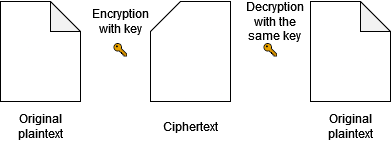
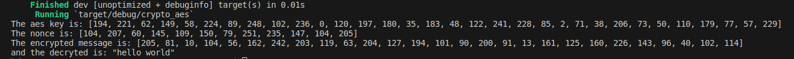
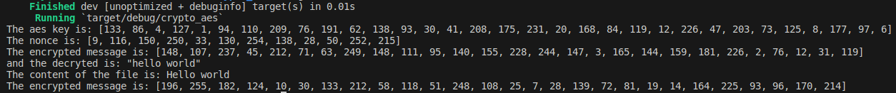
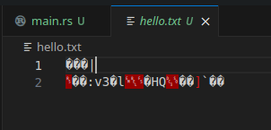

Before we dive into the development of AES implementation, here is a basic diagram explaining its functionality:

Details regarding the specifications of the processors used are specified in the documentation that we recommend reading before tackling this section: aes-gcm. Once again, we are using implementations provided by RustCrypto, but we want to point out that another crate has caught our attention for AES: libaes. This implementation is noteworthy because it operates without any dependencies, and its creators claim it is three times faster than the RustCrypto implementation. However, this crate has not been subjected to code control tests implemented by external companies.
The AES mode we will use is GCM (Galois/Counter Mode). This mode is used for its performance and works on block cipher algorithms like AES. This mode allows us to guarantee both the integrity and confidentiality of the data we will process. It is part of the encryption class known as AEAD: Authenticated Encryption with Associated Data.
In this section, we will implement AES on a string to encrypt it with a cipher and a nonce, then we will address a file.
String🔗As usual since the beginning of this chapter, we refer to the documentation to find information about the methods and Traits we will use: documentation-AES. You can now create a new project and add the following crate to your Cargo.toml:
aes-gcm = 0.10.3The Traits used in this example will be:
generate_key() which will take as a parameter a random number generated by OsRng provided by the rand cratenew() which will take as a parameter the key previously generated and return a ciphergenerate_nonce() which will also take as a parameter a random numberencrypt() which will group all our previous data as parameters and return a vector of u8 dataThe related code is as follows:
use aes_gcm::{
aead::{Aead, AeadCore, KeyInit, OsRng},
Aes256Gcm
};
fn main() {
let message_plain = b"hello world";
let aes_key = Aes256Gcm::generate_key(OsRng); // We generate our key with a random value from OsRng
let cipher = Aes256Gcm::new(&aes_key); // We create the cipher from the generated key
let nonce = Aes256Gcm::generate_nonce(&mut OsRng); // We create the nonce associated with our random value
println!("The aes key is: {:?}\nThe nonce is: {:?}", &aes_key, &nonce);
let ciphertext = cipher.encrypt(&nonce, message_plain.as_ref()).expect("Can't encrypt the message!");
let plaintext = cipher.decrypt(&nonce, ciphertext.as_ref()).expect("Can't decrypt the message");
let utf_plaintext = String::from_utf8(plaintext).unwrap();
println!("The encrypted message is: {:?} \nand the decrypted is: {:?}", ciphertext, utf_plaintext);
}
The result after a cargo run is as follows:

In this section, we will focus on the implementation of AES to encrypt the content of a file. The steps will be similar to those presented previously with the handling of file opening in sha2 and the creation of the AES symmetric key. One of the differences will be how we open the file to get a file descriptor. This time, we will use the OpenOptions structure to define the read and write modes. This will give you another example of handling files with Rust. We will use simple expressions and delete the original file to recreate it with the encrypted content. The content of this source code will be available in the next section of the chapter.
use aes_gcm::{
aead::{Aead, AeadCore, KeyInit, OsRng},
Aes256Gcm
};
use std::{fs, io::{Read, Write}};
fn main() {
let path = "hello.txt"; // Path of our file
let mut file = fs::OpenOptions::new().read(true).write(true).open(&path).expect("Can't open the file"); // File handle
let mut file_content = String::new(); // Buffer for our file content
file.read_to_string(&mut file_content).expect("Can't read the file"); // Put file content in buffer
println!("The content of the file is: {}", &file_content);
fs::remove_file(path).expect("Can't remove the file"); // Remove the file
let aes_key = Aes256Gcm::generate_key(OsRng);
let cipher = Aes256Gcm::new(&aes_key);
let nonce = Aes256Gcm::generate_nonce(&mut OsRng);
let ciphertext = cipher.encrypt(&nonce, file_content.as_ref()).expect("Can't encrypt the message!");
println!("The encrypted message is: {:?}", ciphertext);
let mut file = fs::File::create(path).expect("Can't create the file"); // Create a new file with the same name
file.write_all(&ciphertext).expect("Can't write the ciphertext");
}
After running our code, here is our output:

As well as the content of our file which is indeed encrypted:

This section is now complete. In the next one, we will implement examples concerning Diffie-Hellman to conclude this chapter on cryptography.